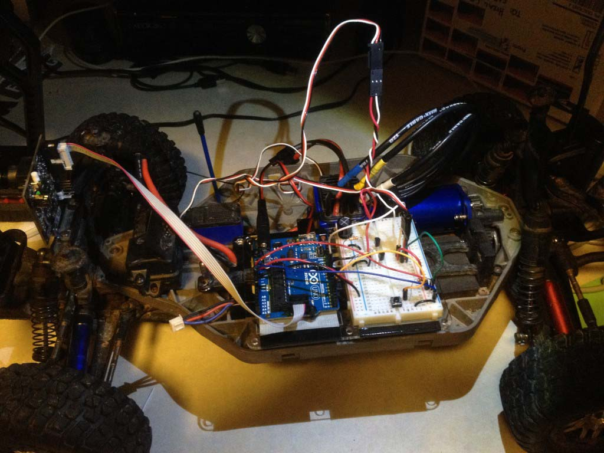
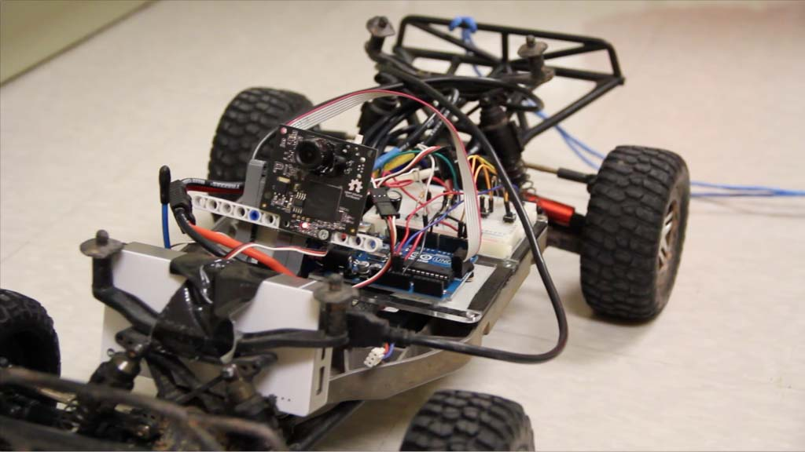
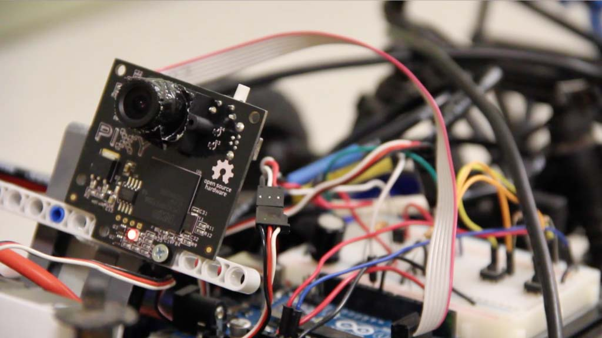
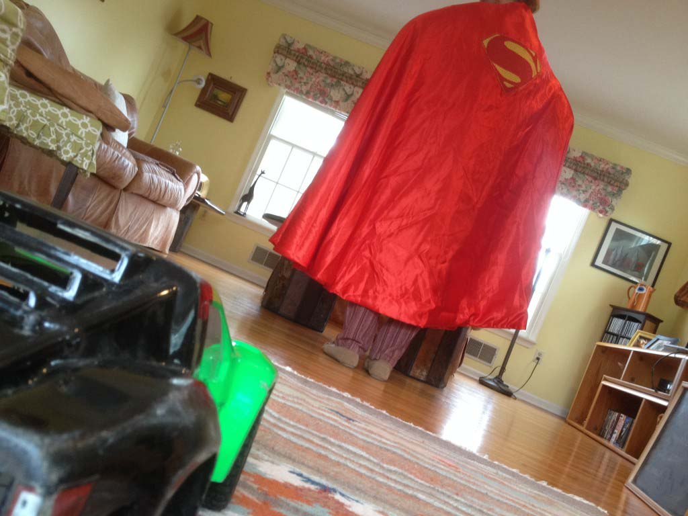
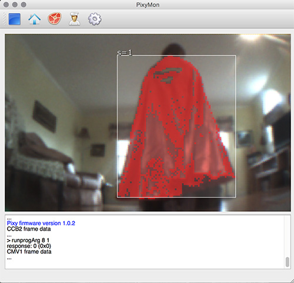
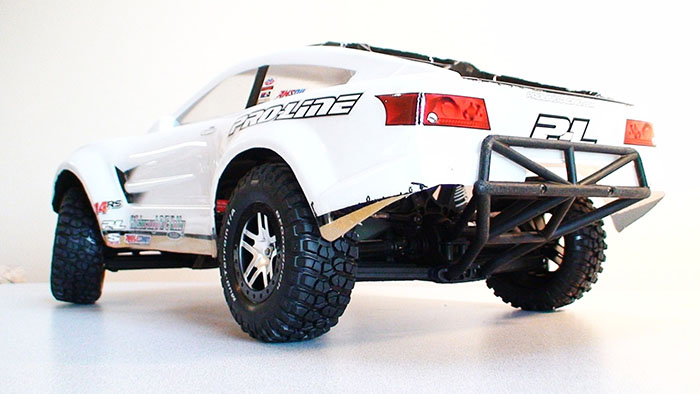
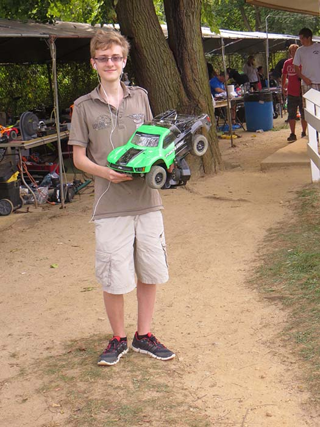
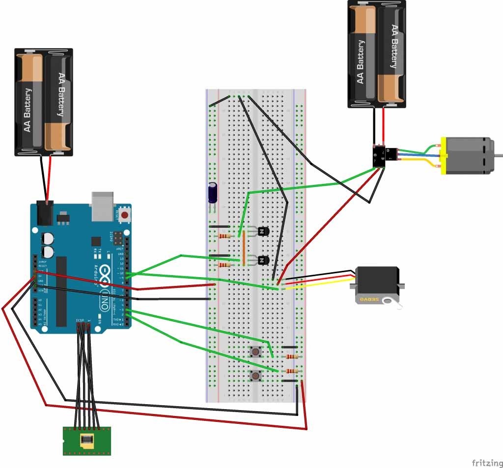
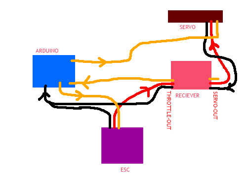

About the Project
This Arduino project is a robotic 1/10th scale car that follows anyone wearing a Superman cape (or large, red clothing). For this project, I acquired a superman cape and began my project with the hopes of making this into a cool interactive public art project, one that can be put out in a public space and people can try running away from the robot. However due to technical difficulties and lack of time, I’ve only been able to get my project working to a certain degree. Within the 1.5-week timespan I had for this project, I was able to get the robot to accurately follow the target at almost any distance, and chase them at a constant speed. One of the issues I had in my limited time was variable speed, and preventing the robot from crashing into the target at high speed.
See my class page to see more of my projects for this course.

This project uses an Arduino to analyze the data from the camera and send signals to the electronic speed control (in charge of the motor) and servo. The Arduino is programmed to keep a constant speed while pursuing the cape-wearing target. There is a button that resets the ideal distance. This is more important when I have the variable-speed working, allowing the car to slow down or speed up depending on how close or far the target is. The wiring was quite complicated because I had to connect an advanced hobby-grade electronic system to a basic Arduino signal-controlled breadboard.

An image of the portable battery pack powering the Arduino.

The Arduino uses one of the more advanced sensors available and compatible with it (due to the relatively weak CPU contained within the circuitboard), a PixyCam. PixyCam is a specialized camera developed by CMULabs and designed specifically to run as fluidly and quickly as possible on the Arduino platform. The camera captures data based on a specified set of colors, giving me the ability to track objects with my chosen color of red. I filter out smaller red objects detected by the camera to focus solely on the largest object, the cape in front of it. Based on the size of the cape's "square" (seen below) the Arduino can determine the relative distance of the target, and theoretically adjust the car's speed accordingly.


These two images demonstrate what the PixyCam sees.

This project uses one of my oldest possessions, a 6 year old Traxxas Slash 4x4 modified to drive at speeds up to 85mph (not to scale). For the purposes of this project I used the original motor and electronic speed controller and a 8.4v LiPo battery (instead of my usual 16.8v), which limits the car to 35mph max. The car is of course quite beat up over the years of driving, racing and off-roading with it. This was chosen as the base for my self-driving project because of it's size and weight-carrying capacity and because I've always wanted to see my hobby car drive itself.

A photo from a few years ago, at the race track.

This is the Fritzing diagram for the breadboard controlling my robot.
Signals are being sent from the Arduino to the servo for steering and the electronic speed controller on my car for the motor speeds. The servo is powered by the ESC rather than the Arduino because the ESC outputs more voltage. The Arduino recieves power from a standard power source (a portable USB battery pack attached to the front of the car), but the ESC on the robot is powered by a two cell LiPo battery. The two buttons controls/resets the default distance from the cape and the power. Pressing the power starts the robot, and pressing it again freezes the car, stopping all servo and motor use.

// Call Pixy and Servo
Pixy pixy;
Servo motor;
Servo servo;
//Initialize Variables and objects
int width = 319;
int height = 199;
int speed = 90;
int dir = 90;
int sizeMIN = 8000;
int sizeMAX = 11000;
int sizeSetPin = 3;
int stopPin = 2;
boolean STOP = true;
int lastSize;
int refresh = 5;
int refreshSpeed = 50;
int sizes[50];
void setup()
{
delay(1000);
Serial.begin(9600);
Serial.println("Starting program...\n");
Serial.print("Initializing Pixy...\t\t");
pixy.init();
Serial.print("Successful\n");
Serial.print("Mounting Servos...\t\t");
motor.attach(9);
servo.attach(10);
Serial.print("Succesful\n");
Serial.print("Calibrating ESC...\t\t");
motor.write(speed);
delay(2000);
Serial.print("Succesful\n");
Serial.print("Setting Servo... \t\t");
servo.write(90);
Serial.print("Successful\n");
Serial.println("\n\n Standing By...");
pinMode(sizeSetPin, INPUT);
pinMode(stopPin, INPUT);
resetArray();
}
void loop()
{
if (digitalRead(sizeSetPin) == LOW) {
sizeMIN = lastSize-1500;
sizeMAX = lastSize+1500;
Serial.print("New ideal size: ");
Serial.print(sizeMIN);
Serial.print(" - ");
Serial.print(sizeMAX);
Serial.println();
delay(1000);
}
if (digitalRead(sizeSetPin) == LOW) {
Serial.println("size");
delay(1000);
}
if (digitalRead(stopPin) == LOW) {
if (!STOP) {
STOP = true;
speed = 90;
Serial.println("Program Halted.");
}
else {
STOP = false;
Serial.println("Program Resumed.");
delay(2000);
motor.write(102);
delay(2000);
}
delay(1000);
}
static int i = 0;
int j;
uint16_t blocks;
char buf[32];
int size = 500;
int largest;
blocks = pixy.getBlocks();
if (blocks)
{
i++;
if (i%refresh==0)
{
for (j=0; j size) {
size = cur_size;
largest = j;
}
}
if (size> 500) {
lastSize = size;
// Serial.print("Size (");
// Serial.print(size);
// Serial.print(")\t\t");
if (i%refreshSpeed==0) {
int total=0;
int sum=0;
int aveSize;
for (int i=0; i<50; i++) {
if (sizes[i] != 0) {
sum = sum + sizes[i];
sum = sum/2;
}
}
aveSize = sum;
//Change speed
Serial.print("Speed (");
Serial.print(speed);
Serial.print(")");
Serial.println();
if (!STOP) {
Serial.print("* ");
Serial.print(aveSize);
Serial.print(" *");
// checkSpeed(aveSize);
}
speed = 107;
resetArray();
}
//change direction
//Serial.print("\tDir (");
//Serial.print(dir);
//Serial.print(")");
checkDir(pixy.blocks[largest].x+(pixy.blocks[largest].width/2));
Serial.println();
for(int i=0; i<50; i++) {
if (sizes[i] == 0) {
sizes[i] = size;
break;
}
}
}
}
if (!STOP) {
//write servo and motor
motor.write(speed);
servo.write(dir);
}
else if (STOP) {
speed = 90;
dir = 90;
servo.write(dir);
motor.write(speed);
}
}
else {
//motor.write(90);
}
}
void resetArray() {
for (int i=0; i<50; i++) {
sizes[i] = 0;
}
}
void checkSpeed(int size) {
if (size< =sizeMAX && size>=sizeMIN){
Serial.print("\t-\t");
}
if (size< =sizeMIN) {
increaseSpeed();
}
if (size>=sizeMAX) {
reduceSpeed();
}
}
void reduceSpeed() {
Serial.print("\tv\t");
if (speed > 90){
speed-=10;
if (speed <90){
speed = 90;
}
}
else if (speed>=40) {
speed -=3;
}
}
void increaseSpeed(){
Serial.print("\t^\t");
if (speed>=90 && speed < = 94) {
motor.write(102);
delay(2000);
speed = 95;
}
else if (speed >= 115 && speed < = 120) { // MAX 140
speed += 1;
}
else if (speed < 90) {
speed = 90;
}
else if (speed < 115){
speed +=2;
}
}
void checkDir(int x) {
if (x < 165) {
//Serial.print("\t<\t");
dir = map(x, 20, 165, 0, 90);
dir = constrain(dir, 0, 90);
}
else if (x>235) {
// Serial.print("\t>\t");
dir = map(x, 235, 320, 90, 180);
dir = constrain(dir, 90, 180);
}
else {
// Serial.print("\t-\t");
dir = 90;
}
}